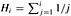

|
|
< Day Day Up > |
|
In open addressing, all elements are stored in the hash table itself. That is, each table entry contains either an element of the dynamic set or NIL. When searching for an element, we systematically examine table slots until the desired element is found or it is clear that the element is not in the table. There are no lists and no elements stored outside the table, as there are in chaining. Thus, in open addressing, the hash table can "fill up" so that no further insertions can be made; the load factor α can never exceed 1.
Of course, we could store the linked lists for chaining inside the hash table, in the otherwise unused hash-table slots (see Exercise 11.2-4), but the advantage of open addressing is that it avoids pointers altogether. Instead of following pointers, we compute the sequence of slots to be examined. The extra memory freed by not storing pointers provides the hash table with a larger number of slots for the same amount of memory, potentially yielding fewer collisions and faster retrieval.
To perform insertion using open addressing, we successively examine, or probe, the hash table until we find an empty slot in which to put the key. Instead of being fixed in the order 0, 1, ..., m - 1 (which requires Θ(n) search time), the sequence of positions probed depends upon the key being inserted. To determine which slots to probe, we extend the hash function to include the probe number (starting from 0) as a second input. Thus, the hash function becomes
h : U × {0, 1, ..., m - 1} → {0, 1, ..., m - 1}.
With open addressing, we require that for every key k, the probe sequence
〈h(k,0),h(k,1), ..., h(k,m - 1)〉
be a permutation of 〈0, 1, ..., m -1〉, so that every hash-table position is eventually considered as a slot for a new key as the table fills up. In the following pseudocode, we assume that the elements in the hash table T are keys with no satellite information; the key k is identical to the element containing key k. Each slot contains either a key or NIL (if the slot is empty).
HASH-INSERT(T, k) 1 i ← 0 2 repeat j ← h(k, i) 3 if T[j] = NIL 4 then T[j] ← k 5 return j 6 else i ← i + 1 7 until i = m 8 error "hash table overflow"
The algorithm for searching for key k probes the same sequence of slots that the insertion algorithm examined when key k was inserted. Therefore, the search can terminate (unsuccessfully) when it finds an empty slot, since k would have been inserted there and not later in its probe sequence. (This argument assumes that keys are not deleted from the hash table.) The procedure HASH-SEARCH takes as input a hash table T and a key k, returning j if slot j is found to contain key k, or NIL if key k is not present in table T.
HASH-SEARCH(T, k) 1 i ← 0 2 repeat j ← h(k, i) 3 if T[j] = k 4 then return j 5 i ← i + 1 6 until T[j] = NIL or i = m 7 return NIL
Deletion from an open-address hash table is difficult. When we delete a key from slot i, we cannot simply mark that slot as empty by storing NIL in it. Doing so might make it impossible to retrieve any key k during whose insertion we had probed slot i and found it occupied. One solution is to mark the slot by storing in it the special value DELETED instead of NIL. We would then modify the procedure HASH-INSERT to treat such a slot as if it were empty so that a new key can be inserted. No modification of HASH-SEARCH is needed, since it will pass over DELETED values while searching. When we use the special value DELETED, however, search times are no longer dependent on the load factor α, and for this reason chaining is more commonly selected as a collision resolution technique when keys must be deleted.
In our analysis, we make the assumption of uniform hashing: we assume that each key is equally likely to have any of the m! permutations of 〈0, 1, ..., m - 1〉 as its probe sequence. Uniform hashing generalizes the notion of simple uniform hashing defined earlier to the situation in which the hash function produces not just a single number, but a whole probe sequence. True uniform hashing is difficult to implement, however, and in practice suitable approximations (such as double hashing, defined below) are used.
Three techniques are commonly used to compute the probe sequences required for open addressing: linear probing, quadratic probing, and double hashing. These techniques all guarantee that 〈h(k, 0), h(k, 1), ..., h(k, m - 1)〉 is a permutation of 〈0, 1, ..., m - 1〉 for each key k. None of these techniques fulfills the assumption of uniform hashing, however, since none of them is capable of generating more than m2 different probe sequences (instead of the m! that uniform hashing requires). Double hashing has the greatest number of probe sequences and, as one might expect, seems to give the best results.
Given an ordinary hash function h' : U → {0, 1, ..., m - 1}, which we refer to as an auxiliary hash function, the method of linear probing uses the hash function
h(k, i) = (h'(k) + i) mod m
for i = 0, 1, ..., m - 1. Given key k, the first slot probed is T[h'(k)], i.e., the slot given by the auxiliary hash function. We next probe slot T[h'(k) + 1], and so on up to slot T[m - 1]. Then we wrap around to slots T[0], T[1], ..., until we finally probe slot T[h'(k) - 1]. Because the initial probe determines the entire probe sequence, there are only m distinct probe sequences.
Linear probing is easy to implement, but it suffers from a problem known as primary clustering. Long runs of occupied slots build up, increasing the average search time. Clusters arise since an empty slot preceded by i full slots gets filled next with probability (i + 1)/m. Long runs of occupied slots tend to get longer, and the average search time increases.
Quadratic probing uses a hash function of the form
where h' is an auxiliary hash function, c1 and c2 ≠ 0 are auxiliary constants, and i = 0, 1, ..., m - 1. The initial position probed is T[h'(k)]; later positions probed are offset by amounts that depend in a quadratic manner on the probe number i. This method works much better than linear probing, but to make full use of the hash table, the values of c1, c2, and m are constrained. Problem 11-3 shows one way to select these parameters. Also, if two keys have the same initial probe position, then their probe sequences are the same, since h(k1, 0) = h(k2, 0) implies h(k1, i) = h(k2, i). This property leads to a milder form of clustering, called secondary clustering. As in linear probing, the initial probe determines the entire sequence, so only m distinct probe sequences are used.
Double hashing is one of the best methods available for open addressing because the permutations produced have many of the characteristics of randomly chosen permutations. Double hashing uses a hash function of the form
h(k, i) = (h1(k) + ih2(k)) mod m,
where h1 and h2 are auxiliary hash functions. The initial probe is to position T[h1(k)]; successive probe positions are offset from previous positions by the amount h2(k), modulo m. Thus, unlike the case of linear or quadratic probing, the probe sequence here depends in two ways upon the key k, since the initial probe position, the offset, or both, may vary. Figure 11.5 gives an example of insertion by double hashing.
The value h2(k) must be relatively prime to the hash-table size m for the entire hash table to be searched. (See Exercise 11.4-3.) A convenient way to ensure this condition is to let m be a power of 2 and to design h2 so that it always produces an odd number. Another way is to let m be prime and to design h2 so that it always returns a positive integer less than m. For example, we could choose m prime and let
|
h1(k) |
= |
k mod m, |
|
h2(k) |
= |
1 + (k mod m'), |
where m' is chosen to be slightly less than m (say, m - 1). For example, if k = 123456, m = 701, and m' = 700, we have h1(k) = 80 and h2(k) = 257, so the first probe is to position 80, and then every 257th slot (modulo m) is examined until the key is found or every slot is examined.
Double hashing improves over linear or quadratic probing in that Θ(m2) probe sequences are used, rather than Θ(m), since each possible (h1(k), h2(k)) pair yields a distinct probe sequence. As a result, the performance of double hashing appears to be very close to the performance of the "ideal" scheme of uniform hashing.
Our analysis of open addressing, like our analysis of chaining, is expressed in terms of the load factor α = n/m of the hash table, as n and m go to infinity. Of course, with open addressing, we have at most one element per slot, and thus n ≤ m, which implies α ≤ 1.
We assume that uniform hashing is used. In this idealized scheme, the probe sequence 〈h(k, 0), h(k, 1), ..., h(k, m - 1)〉 used to insert or search for each key k is equally likely to be any permutation of 〈0, 1, ..., m - 1〉. Of course, a given key has a unique fixed probe sequence associated with it; what is meant here is that, considering the probability distribution on the space of keys and the operation of the hash function on the keys, each possible probe sequence is equally likely.
We now analyze the expected number of probes for hashing with open addressing under the assumption of uniform hashing, beginning with an analysis of the number of probes made in an unsuccessful search.
Given an open-address hash table with load factor α = n/m < 1, the expected number of probes in an unsuccessful search is at most 1/(1-α), assuming uniform hashing.
Proof In an unsuccessful search, every probe but the last accesses an occupied slot that does not contain the desired key, and the last slot probed is empty. Let us define the random variable X to be the number of probes made in an unsuccessful search, and let us also define the event Ai , for i = 1, 2, ..., to be the event that there is an ith probe and it is to an occupied slot. Then the event {X ≥ i} is the intersection of events A1 ∩ A2 ∩ ··· ∩ Ai-1. We will bound Pr {X ≥ i} by bounding Pr {A1 ∩ A2 ∩ ··· ∩ Ai-1}. By Exercise C.2-6,
|
Pr {A1 ∩ A2 ∩ ··· ∩ Ai-1} |
= |
Pr{A1} · Pr{A2 | A1} · Pr{A3 | A1 ∩ A2} |
|
Pr{Ai-1 | A1 ∩ A2 ∩ ··· ∩ Ai-2}. |
Since there are n elements and m slots, Pr {A1} = n/m. For j > 1, the probability that there is a jth probe and it is to an occupied slot, given that the first j - 1 probes were to occupied slots, is (n - j + 1)/(m - j + 1). This probability follows because we would be finding one of the remaining (n - (j - 1)) elements in one of the (m - (j - 1)) unexamined slots, and by the assumption of uniform hashing, the probability is the ratio of these quantities. Observing that n < m implies that (n - j)/(m - j) ≤ n/m for all j such that 0 ≤ j < m, we have for all i such that 1 ≤ i ≤ m,
Now we use equation (C.24) to bound the expected number of probes:
The above bound of 1+α+α2+α3+··· has an intuitive interpretation. One probe is always made. With probability approximately α, the first probe finds an occupied slot so that a second probe is necessary. With probability approximately α2, the first two slots are occupied so that a third probe is necessary, and so on.
If α is a constant, Theorem 11.6 predicts that an unsuccessful search runs in O(1) time. For example, if the hash table is half full, the average number of probes in an unsuccessful search is at most 1/(1 - .5) = 2. If it is 90 percent full, the average number of probes is at most 1/(1 - .9) = 10.
Theorem 11.6 gives us the performance of the HASH-INSERT procedure almost immediately.
Inserting an element into an open-address hash table with load factor α requires at most 1/(1 - α) probes on average, assuming uniform hashing.
Proof An element is inserted only if there is room in the table, and thus α < 1. Inserting a key requires an unsuccessful search followed by placement of the key in the first empty slot found. Thus, the expected number of probes is at most 1/(1 - α).
Computing the expected number of probes for a successful search requires a little more work.
Given an open-address hash table with load factor α < 1, the expected number of probes in a successful search is at most
assuming uniform hashing and assuming that each key in the table is equally likely to be searched for.
Proof A search for a key k follows the same probe sequence as was followed when the element with key k was inserted. By Corollary 11.7, if k was the (i + 1)st key inserted into the hash table, the expected number of probes made in a search for k is at most 1/(1 - i/m) = m/(m - i). Averaging over all n keys in the hash table gives us the average number of probes in a successful search:
where  is the ith harmonic number (as defined in equation (A.7)). Using the technique of bounding a summation by an integral, as described in Section A.2, we obtain
for a bound on the expected number of probes in a successful search.
If the hash table is half full, the expected number of probes in a successful search is less than 1.387. If the hash table is 90 percent full, the expected number of probes is less than 2.559.
Consider inserting the keys 10, 22, 31, 4, 15, 28, 17, 88, 59 into a hash table of length m = 11 using open addressing with the primary hash function h'(k) = k mod m. Illustrate the result of inserting these keys using linear probing, using quadratic probing with c1 = 1 and c2 = 3, and using double hashing with h2(k) = 1 + (k mod (m - 1)).
Write pseudocode for HASH-DELETE as outlined in the text, and modify HASH-INSERT to handle the special value DELETED.
Suppose that we use double hashing to resolve collisions; that is, we use the hash function h(k, i) = (h1(k)+ih2(k)) mod m. Show that if m and h2(k) have greatest common divisor d ≥ 1 for some key k, then an unsuccessful search for key k examines (1/d)th of the hash table before returning to slot h1(k). Thus, when d = 1, so that m and h2(k) are relatively prime, the search may examine the entire hash table. (Hint: See Chapter 31.)
Consider an open-address hash table with uniform hashing. Give upper bounds on the expected number of probes in an unsuccessful search and on the expected number of probes in a successful search when the load factor is 3/4 and when it is 7/8.
Consider an open-address hash table with a load factor α. Find the nonzero value α for which the expected number of probes in an unsuccessful search equals twice the expected number of probes in a successful search. Use the upper bounds given by Theorems 11.6 and 11.8 for these expected numbers of probes.
|
|
< Day Day Up > |
|